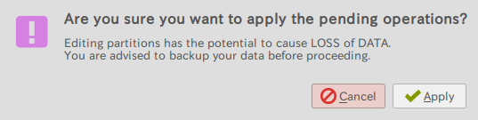

GUIアプリケーションを使ってパーティションを作成する方法
fdiskだとハードルが高いという人はGPartedを使うと 比較的簡単にパーティションが作成できます。
(ddコマンドまで終わっていることを想定）
1. GPartedをインストールする
GPartedはパーティションを作成・編集するためのGUIアプリケーションです。 Ubuntuであれば以下のコマンドでインストールすることが出来ます。
sudo apt-get install gparted
2. GPartedを起動する
認証が必要となります。パスワードを入力してGPartedを起動します。

起動後の画面です。右上のプルダウンメニューが先ほどdsmegで確認した
識別子となっていることを確認してください。(例ではmmcblk0となっています。)

3. メニューのDevice→Create Partition Tableを選択します。
msdosを選択し、パーティションテーブルを作成します。

4. bootパーティションを作成します。 まず、新規作成のアイコンをクリックします。

New_sizeを256、File systemをfat32、Labelをbootとし、
Addを押して作成します。

5. rootパーティションを作成します。
同様に、新規作成のアイコンをクリックします。
New_sizeはデフォルトのまま、File systemをext4、
Labelをrootとし、Addを押して作成します。

6. Apply All Operationsのアイコンをクリックし、ディスクに書き込みます。
以下の警告画面が出るので、Applyを選択します。

書き込みが正常に完了すると以下の画面が出るので、Closeを選択してください。

7. bootパーティションを右クリックし、Manage Flagsを選択します。
bootとlbaにチェックをいれ、Closeを押します。

以上でパーティションの作成は終了です。
パーティション構成が以下と同様になっていることを
確認の上、メニューのGParted→QuitからGPartedを終了してください。

(8番(wget以降)からは同様の作業)